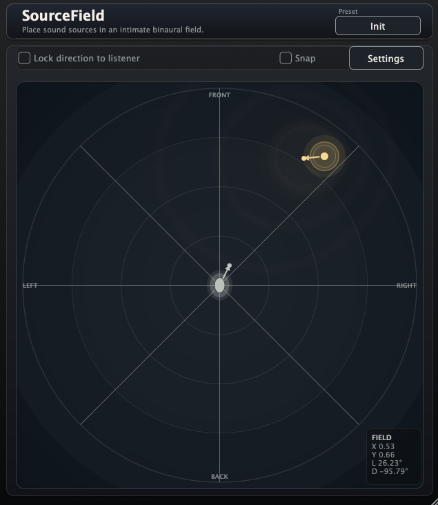

Released — Version 1.0.0.
Free 2D ASMR-Style Source Placement Plug-in
SourceField is for playing with close, physical, ASMR-like stereo placement. Put a mono or stereo source on a 2D field around the listening point, rotate the source direction, and rotate the listener direction from the center point to shape where the sound appears to come from.
SourceField is being released early because the basic idea is already fun: put a sound close to the listener, aim it, turn the listener, and do ASMR-like placement experiments on one 2D surface. macOS AU/AAX/VST3 and Windows VST3 builds are available. More controls and sound-model revisions are planned.
Move the sound on an XY field instead of thinking only in pan or width.
Rotate where the source is facing, changing the feeling of projection and off-axis placement.
Keep the listener at the center, then turn the listening direction to reshape the perspective.
The core interaction is in place, but the sound and parameter set will keep evolving as SourceField grows. Treat this first release as a playful spatial tool that will gain more controls and refinements over time.
v1.0.0 — Initial release.
macOS AU/AAX/VST3 and Windows VST3 builds for testing SourceField's first 2D source-placement workflow.
SourceField_1.0.0.pkgSourceField-windows-vst3.zipSourceField_1.0.0.pkg
or
SourceField-windows-vst3.zip.
Email: kjdevapphelp@gmail.com
Please include: OS version, host DAW, plug-in format, SourceField version, and a short description of what you expected to hear or see.